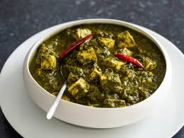

Recipe of Palak Paneer

Description
Palak Paneer is a delicious North Indian dish made from fresh spinach puree and soft cubes of paneer (cottage cheese). It is nutritious, flavorful, and often served with roti or rice.
This recipe uses aromatic spices to create a rich, creamy gravy perfect for any meal.
Ingredients
- 250g paneer cubes
- 300g fresh spinach leaves
- 1 onion, finely chopped
- 2 tomatoes, pureed
- 1 green chili
- 1 tsp ginger-garlic paste
- 1/2 tsp cumin seeds
- 1/2 tsp garam masala
- 1/4 tsp turmeric powder
- 1/2 tsp red chili powder
- 2 tbsp cream
- Salt to taste
- 2 tbsp oil
Steps
- Blanch spinach in boiling water for 2-3 minutes. Drain and blend into a smooth puree.
- Heat oil in a pan. Add cumin seeds and let them splutter.
- Add chopped onions and sauté until golden brown.
- Add ginger-garlic paste and sauté for a minute.
- Add tomato puree, turmeric, chili powder, and salt. Cook until oil separates.
- Pour in the spinach puree and cook for 4-5 minutes.
- Add paneer cubes, garam masala, and cream. Mix gently and cook for 2 more minutes.
- Serve hot with naan or rice.